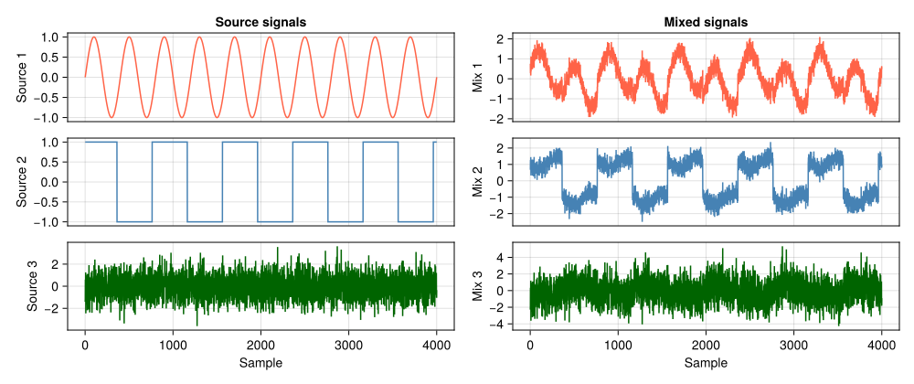
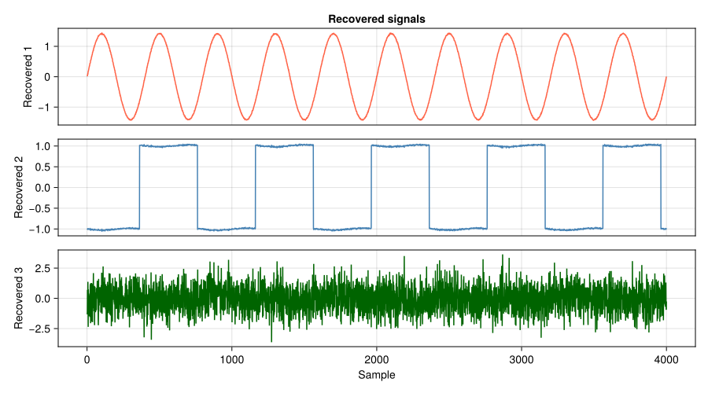

Getting Started
This tutorial will show how to build a synthetic dataset of mixtures, fit an AMICA model to it and recover the sources using the fitted model.
Creating a Synthetic Dataset
We create three source signals: sin.(t), sign.(sin.(0.5 .* t .+ 0.3)) and a random source randn(N) and mix them using the mixing matrix.
using Amica
using Random
Random.seed!(2)
N = 4_000
t = range(0, 20pi, length=N)
sources = hcat(
sin.(t),
sign.(sin.(0.5 .* t .+ 0.3)),
randn(N),
)
mixing = [
1.0 0.40 -0.25
-0.35 1.10 0.30
0.20 -0.45 1.30
]
mixtures = sources * mixing'The original source signals and the mixed signals look like this:

Fitting AMICA
The simplest way fit an AMICA model to the dataset we created, is to call the fit function.
model = fit(
SingleModelAmica,
mixtures;
m=3,
maxiter=50
)SingleModelAmica{Float64} with:
- dims (N, n, m): (4000, 3, 3)
- likelihood: -0.9635456789835958 (after 50 iterations)
Using the Result
After fitting, model stores the learned parameters.
The most relevant fields are:
model.A: learned mixing matrix, inverse of the unmixing matrixmodel.LL: log-likelihood for each iterationmodel.proportions,model.location,model.scale,model.shape: source density parameters of the fitted Gaussian Mixture Models
The recover_sources function can be used to unmix the data according to model.A.
recovered_sources = recover_sources(mixtures, model)A plot of the unmixed sources looks as follows and clearly shows that the original sources were successfully recovered, even though they might differ in order, sign and scale.
